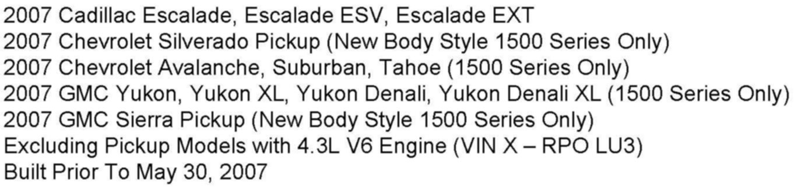
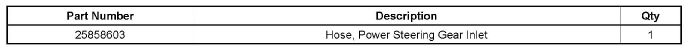
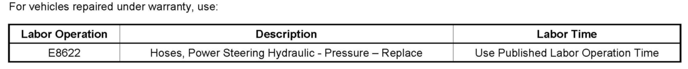

Steering - Steering Wheel Shudder/Vibration At Low Speed
TECHNICALBulletin No.: 08-02-32-001C
Date: February 06, 2009
Subject:
Power Steering, Steering Wheel Shudder/Vibration During Low Speed Parking Maneuvers (Replace Power Steering Assembly Hose)

Models
Supercede:
This bulletin in being revised to include 1500 Series Trucks New Body Style Only. Please discard Corporate Bulletin Number 08-02-32-001B (Section 02 - Steering).
Condition
Some customers may comment on a shudder or vibration in the steering wheel during low speed parking lot maneuvers.
Cause
This vibration/shudder may be caused by unstable fluid flow characteristics inside the power steering hose assembly.
Correction
Important:
DO NOT replace the power steering pump or gear.
Technicians are to replace the power steering inlet hose assembly with P/N 25858603.
Refer to SI for power steering inlet hose removal and installation procedures.

Parts Information

Warranty Information

Disclaimer